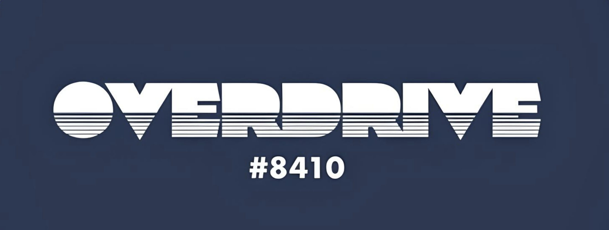
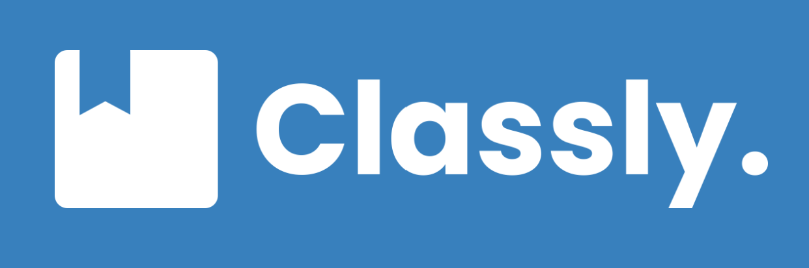

Featured Projects

Nautilus
Oyster River Overdrive's competition robot. Responsible for robot operations and activation. Specializing in Control Theory and Driver Interface with the robot via autonomous actions.
FIRST Robotics
Java
Electrical Engineering

Daskalos
Selenium-Interfaced integration made to help high school students with time management. Takes student grades then calculates and produces an answer of how the student should spend their time studying.
Time Management
Selenium-Python
Organizations & Leadership

Oyster River Overdrive
Team Co-Lead | August 2021 - Present
FIRST Robotics Competition Team #8410
Overdrive is a completely student led team focusing on the development of skills, and their real world application.

Classly
Co-Founder | July 2024 - Present
A hackathon developed app allowing UNH students to find their classes with ease using building schematics and geolocation